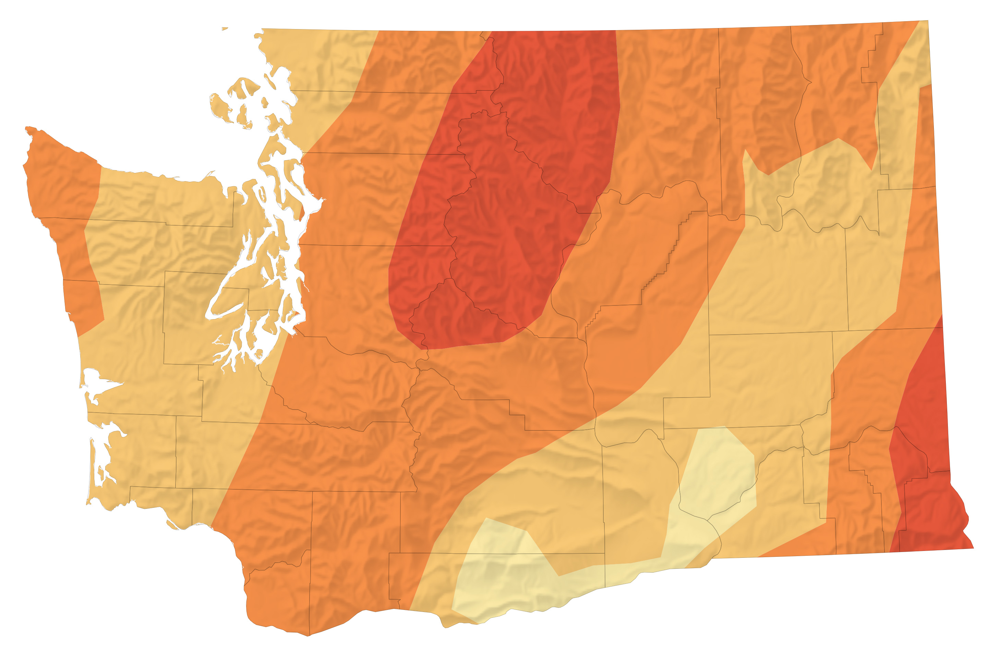

Drought Parches the Yakima River Basin
The Yakima River Basin spans more than 6,000 square miles (16,000 square kilometers) in south-central Washington across one of the most intensively irrigated areas in the United States. But in 2025, for the third year in a row, the basin faces drought.
After several dry months, U.S. Drought Monitor maps in July (below) and August 2025 show much of the basin in various stages of drought. Data from the National Integrated Drought Information System indicate that much of the basin received a quarter to half of normal rainfall in recent months. Stream runoff was also well below normal following a winter when snowpack in the basin was modest and warm temperatures caused snow to melt quickly and early.
Water storage in the basin’s five reservoirs has dropped sharply as well, bringing levels, at times, to some of the lowest measured since record-keeping started in 1971. The OLI (Operational Land Imager) on Landsat 8 captured this image (above right) of three of the Yakima basin reservoirs on July 29, 2025, the most recent date a clear image of the reservoirs was available.
A map shows the severity of drought in Washington state on July 29, 2025. The entire state was experiencing some degree of drought or dry weather, with the most intense drought in the Cascades. The reservoirs in this area feed irrigation systems that supply water to farmers throughout the Yakima River Basin.
While the amount of stored water typically drops in July and August as water gets distributed to farmers to irrigate crops, data from the Bureau of Reclamation (BOR) indicate the reservoirs were filled to 39 percent of capacity when the 2025 image was acquired, about half the average for that time of year. For comparison, the other image (above left) shows the same area on July 30, 2017, when Yakima Basin reservoirs were 77 percent full.
Water levels continued to drop throughout August. By August 21, the basin's reservoirs held a combined 286,634 acre-feet of water, or 27 percent of capacity, still about half of the average for that point in the year. By that date, Keechelus Lake was 9 percent full, Kachess Lake was 34 percent full, and Cle Elum Lake was 7 percent full, according to BOR data.
Water storage deficits of this magnitude have begun to impact farmers in the Yakima River Basin, one of the most productive agricultural regions in Washington. The area is known for raising large volumes of hops, apples, and several other specialty crops.
In August, the Bureau of Reclamation announced that the water supply would not meet demand this year and warned that water users with “junior” water rights could expect to receive only 40 percent of their entitlements this summer. In Washington, water rights are categorized based on when they were granted, with senior rights typically granted earlier. About half of the water distributed goes to users with junior rights. The shortages mean that some irrigation districts, including Kittitas and Roza, plan to end water distribution several weeks early, according to news reports.
NASA supports several missions, tools, and datasets relevant to water resource management. Among them is OpenET, a web-based platform that uses satellite data to measure how much water plants and soils release into the atmosphere. The tool can help farmers tailor irrigation schedules to actual water use by plants, optimizing “crop per drop” and reducing waste. NASA data from GRACE, SMAP, Landsat, and other missions and models are used by the U.S. Drought Monitor and National Integrated Drought Information System to generate drought maps on a weekly basis.